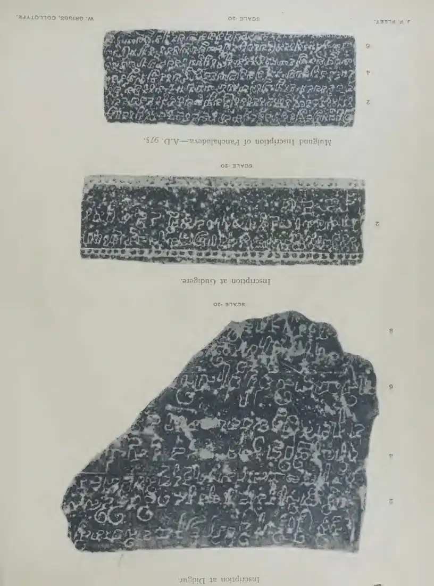

Three Inscriptions in the Dharwar District
THREE INSCRIPTIONS IN THE DHARWAR DISTRICT.
By J. F. FLEET, I.C.S. (RETD.), PH.D., C.I.E.
A.—AN INSCRIPTION AT DIDGUR.
This inscription is now brought to notice for the first time. I edit it, and the collotype (see opposite page 253 below) is given, from an ink-impression obtained by me in 1887.
Diđgûr is a village about thirteen miles towards the south-west from Karajgi, the headquarters of the Karajgi tâluka of the Dhârwâr district. The Indian Atlas sheet No. 42 (1827) shews it as ‘Dindgoor,’ with a nasal in the first syllable for which it is difficult to account; and moreover, as compared with the map that I mention next, it transposes the position of it with the position of a neighbouring village named Timâpur. The Map of the Dhârwâr Collectorate (1874) shews it as ‘Deergoor.’ And the Postal Directory of the Bombay Circle (1879) shews it as ‘Didgur.’ Line 3 of the record, taken in connection with the general purport and with its existence at Diđgûr, suggests that the earlier name of the place was Mugunda. And the reference to the governor Dosi has the effect of placing Mugunda, and the other village that is mentioned, Sangavûr, in the Banavâsi twelve-thousand province. The inscription is on a stone which was found in a field, Survey No. 1 of Diđgûr.
At the top of the stone there are sculptures, which shew, in the centre, a seated figure, squatting and facing full-front, on a seat of three tiers, and holding in each hand apparently some weapon which looks like a short spear; on the proper right of this figure, there is a boar, standing to the proper left, i.e. towards the central figure; and on the proper left there is some animal which, in the drawing submitted to me, looks more like a badly sketched horse or donkey than anything else, standing to the proper right, i.e., again, towards the central figure.—The extant portion of the writing covers an area ranging in breadth from about 10” in line 8 to 2’ 3” in line 2, by about 1’ 9¼” high. It is in a state of fairly good preservation, and is legible with certainty almost throughout. But, owing to parts of the stone having been broken away and lost, letters are missing at the ends of the lines from line 4 onwards, and at the beginning of lines 7 and 8. And there must have been originally at least one more line, containing the usual end of the imprecatory verse of which there is a remnant in line 8.—The characters are Kanarese, boldly formed and well executed. The size of them1 ranges from about in the r of the re in tereya, line 3, to about 1 in the s of the sâ in sâsi[ra], line 6; and the lbi in line 2, No. 17, is about 4” high, on the slant. The superscript long î is used throughout, for the short i as well as for the long vowel. The distinct form of the lingual d is used; and it is very pointedly marked in the di of keđisi[doňge], line 5, No. 15. There is a final form of the l in line 4, No. 12, in grahana[do]l. As regards the palaeography,—the kh and ñ do not occur2. The j occurs twice, in lines 1 and 3, and, in both places, is of the old square type, closed; it can be seen best in the ja of mahâjanadâ, line 3, the last akshara but one. The b occurs seven times, and is, throughout, of the old square type, closed; but the actual form of it, being mostly composed of curves rather than of straight lines, must be looked on as a somewhat cursive form of the old square
1 See page 41 above.
2 In kâdonge, line 5, where either the guttural nasal or the anusvâra would be permissible, the writer mistakenly used the dental nasal.
type : the intended form can be seen best in the upper b of the rbba in sásirbar, line 6, No. 5; and a noticeable feature in it, is the marked crook, halfway up the left side of the letter, with which the formation of the character commenced : we can see that the writer began at that point, and formed the rest of the character by one steady sweep of the pen, running along the top, down the right side, along the bottom to the left, and then up to the starting-point; and it is easy to realise that the later cursive type may have been developed almost directly from this particular form of the old square type, by making the downstroke immediately after completing the crook, and then forming the rest of the character to the right instead of to the left. We have the l in the la of kálam, line 4, No. 3; and it, also, is of the old square type : it occurred again in phalum, line 5; it is almost entirely destroyed there; but such traces as are discernible in the impression, indicate that there, also, the old square type was used.— We have the remains of a Sanskrit imprecatory verse in line 8. But the language of the body of the record is Kanarese, of the archaic type, in prose. In Mugundadul, line 3, we have the somewhat exceptional locative ending ul;1 but we have the usual ending ol in [Vára]násiyol in line 6, and apparently also in grahaṇa[do]l, line 4.— The orthography does not present anything calling for comment.
The inscription refers itself to the reign of a king Kattiyara, under whom a certain Dosi was governing the Banavási twelve-thousand province. The object of it was to record a general assignment of some tax under the orders of the king, and the special assignment by Dosi of a quarter-share of the tax of the village of Sańgavûr to the Mahájanas of Mugunda,— doubtless for expenditure by them on communal objects.2
Of the two villages mentioned in the record, Sańgavûr is evidently the modern ‘Sungoor’ of the maps, about two miles on the north of Diđgûr.3 Mugunda seems to be the earlier name of Diđgûr itself. The record tacitly, but plainly, places both these villages in the Banavási twelve-thousand province. And it seems likely that the Mugunda mentioned here is the town from which there was named a group of villages called the Mugunda twelve, of which mention is made in an inscription of A.D. 1075 at Bałagámi. That record registers the grant, for the temple of the god Nárasinha at Bałligâve, of a town or village (báda) named Kundavige in “the Mugunda twelve which was a kampaṇa of the Banavase náđ.”4 The maps do not shew any such names as Mugunda and Kundavige in the neighbourhood of Bałagámi. Diđgûr is only twenty-four miles away towards the north-by-east from Bałagámi. And, though there, also, the maps do not shew any such names now, there is no objection, such as on account of excessive distance from the temple to which the grant was made, to locate Kundavige somewhere near Diđgûr.5
The record is not dated. But the characters of it are fairly referable to closely about A.D. 800. The names of the king and of the local governor are not known as yet from any other records. It seems impossible to explain the existence of this record in the Ráshtrakúta territory and in the period to which it must be referred, except on the supposition that Kattiyara was one of the twelve confederate kings and princes, headed by Stambha-Kambayya, who shortly after A.D. 794 sought to dispute the sovereignty of the Ráshtrakúta king Gôvinda III.6 And, in my opinion, that is certainly the explanation of the matter. Further, it seems likely that, of the emblems on the stone, the boar belongs to the king Kattiyara, and the other animal to the
1 See page 99 f. above.
2 Compare page 102 above.
3 There are inscriptions at ‘Sungoor’ and at the neighbouring village of ‘Koolenoor,’ which might possibly throw further light on the matter of the present record.
4 P. S. O.-C. Inscrs. No. 161, lines 33, 34; Ind. Ant. Vol. IV. pp. 209, 211; and see Mysore Inscrs. p. 143.
5 Moreover, there are various indications that the names of places in that neighbourhood have changed very considerably in the course of time,— probably through the splitting up of towns into small villages.
6 See page 197 above; also page 249 above, where we have Prof. Kielhorn’s translation of the verse, No. 13, in the Rádhanpur plates,
Plate 1 is bound after this page.
governor Dosi. From this it would follow that Kattiyara was a Chalukya. descended from, or at least connected with, the Western Chalukyas of Bâdâmi, and that we have in him the Kattiyaradêva who is mentioned as an ancestor of the later Châlukya dynasty of Kalyâni in the Managôli inscription of A.D. 1161.1
TEXT.2
| 1 | Svasti3 | Śrī-Kattiyara | prithivi-rájyam-keye | Dosi | Banavâsi- |
| 2 | pannīlchâsiranum4=âle | nû(?)ḥuvaka(?ra)lagađigāl=biđise | Sam- | ||
| 3 | gavûr[â] | teḥeya | bhâgamân=Mugundadūl=Dosi | mahâjana- | |
| 4 | dâ kâlam kālchi bitton=grahaṇa[do]l | chandra-sûry[y]am-[baram] [||*] [I]- | |||
| 5 | dân=kádonge6 | aśvamêdhadâ | pha[la]m=akkum | keđisi[donge | Vâra]- |
| 6 | nâsiyōl=sâsirbbar=ppârbbarum | sâsi[ra | kavileyumam | konda] | |
| 7 | [p]âpam=akkum yu . . vûrumân=āli . . [||*] | [Sva-dattâm para-dattâm] | |||
| 8 | [vâ yô] harêta vasundharâm | sha[sht]i | . . . . . |
TRANSLATION.
Hail ! While the glorious Kattiyara was reigning over the earth ; and while Dosi was governing the Banavâsi twelve-thousand :— On (Kattiyara) causing to be assigned7 . . . . . „8 Dosi laved t' feet of the Mahâjanas at Mugunda, and assigned (to them), at the time of an eclipse, a 4 arter9 of the tax of Sangavûr, [to continue as long as] the moon and sun [may last].
(Line 4.) To him who protects this, there shall accrue the reward of an aśvamêdha-sacrifice ; to him who destroys it, there shall attach the guilt of [killing] a thousand Brâhmaṇs and a thousand [cows] at Vâranâsi ! . . . . .10
(Verse 1 ; line 7) [He who] confiscates land [that has been given, whether by himself or by another], . . . . .
B.—AN INSCRIPTION AT GUDIGERE.
This inscription is now brought to notice for the first time. It was originally brought to my notice by the then Mâmlatdâr of Lakshmêshwar, in February, 1883. I edit it, and the accompanying collotype is given, from an ink-impression obtained by me in 1892.
Guđigere is the head-quarters town of an outlying tâluka of the same name belonging to the Junior Miraj State, within the limits of the Dhârwâr district. The Indian Atlas sheet No. 41 (1852) shews it as 'Goodagerree,' in lat. 15° 26', long. 75° 6', six miles towards the west of Lakshmêshwar. The Map of the Dhârwâr Collectorate (1874) shews it as 'Goodeegeree.' And the Postal Directory of the Bombay Circle (1879) shews it as 'Gudgiri.' The Railway
1 Above, Vol. V. p. 16, text line 5 ; note 4 below the translation on page 20 may now be cancelled.
2 From the ink-impression.
3 The sign for the superscript long ̄ is used throughout to denote the short i also. It does not seem necessary to encumber the text by shewing the long vowel in each case and entering the corrections.
4 Read pannīlchâsiraman.
5 This is rather a nondescript akshara. It looks more like nû than anything else. But it may possibly be ku or kû.
6 Read kádonge, or kádonge.
7 For the meanings given to biđisu here and to biđu in line 4, see page 107 above, note 4.
8 The word before biđise is unintelligible.
9 Bhága seems to be used in this specific sense (for which see Monier-Williams' Sanskrit Dictionary), rather than in the vague meaning of 'a share.'
10 The original contained some words here,— perhaps introducing the name of another village, or perhaps only deprecating the destruction of the village itself,— of which not enough remains to make the sense intelligible.
officials have adopted the form 'Gudgeri.'1 We already know one record from this place,—the inscription of A.D. 1076-77,2 which gives its name in the Kanarese form of Guđigere and in the Sanskritised form of Dhvajataṭaka. An earlier mention of it is found in the Tâlgund inscription of A.D. 997,3 which mentions, as a feudatory of the Western Châlukya king Taila II., a certain Bhímarasa,4 with the biruda of Tailapanaíkakára or "the champion of Tailapa," who was then governing the [Banavâ]si twelve-thousand, the Sâtaļige thousand (the Sântaļige thousand of other records),5 the Ki[sukâ]đ seventy, and an agrahâra the name of which is either Samasi-Guđigere or possibly Savasi-Guđigere.6 The first component of this name evidently denotes the modern 'Sownshee' of the maps, seven miles north-west-by-north from Guđigere. The two villages thus constituted in ancient times an agrahâra, which was named after both of them. And, as the Tâlgund record cites, among the witnesses to the matter which it registers, (the people or elders of) the padinent-agrahâra, it would appear that the Samasi-Guđigere agrahâra was one of the eighteen agrahâras. The present inscription is on a stone on the north side in front of a temple of Kalamêsvara at Guđigere.
The sketch submitted to me shews a narrow high stone, with a tall panelled head, probably about four feet high, rounded at the top. At the bottom of the outer panelling, on each side there is a full-blown water-lily; and at the bottom of the middle panel there is a large circle, with a big dot in the centre of it, standing on a square or rectangular pedestal, from each side of which there projects a floral ornamentation. Then comes the writing, immediately below the above, on the bottom part of the panelled head. Below the writing the stone contracts to a square face, probably about one foot square, on which there is the sculpture of an elephant, standing to the proper left, with his trunk hanging down and the tip of it turned up inwards, and, in fact, depicted very similarly to the elephant at the top of the stone at Bałagâmi which contains the inscription of the time of the Western Chalukya king Vinayâditya and the Sêndraka prince Pogilli,7 and—(except that there is a band or strap round the body of the elephant)—to the elephant at the top of the Peggu-ûr Ganga inscription of A.D. 978.8 Below
1 It may be remarked that the name-boards exhibited at railway stations, while large enough and clear enough, are anything but a safe guide to the actual forms of place-names, though they are likely to do more than anything else towards perpetuating certain erroneous or imperfect forms. I have seen, more than once, the same name exhibited in three different spellings on the same platform,—in one form in Kanarese characters, in another in Marâthi characters, and in still another in English characters,—and not one of them absolutely correct in all details.
2 Ind. Ant. Vol. XVIII. p. 35.
3 Pâli, Sanskrit, and Old-Canarese Inscriptions, No. 214; and see Mysore Inscrs. p. 186.—Here, as in various other cases, the details given by me from the photographs of the records are not all presented in Mysore Inscriptions. No doubt, more complete and correct accounts of the contents of the records included in that book, will be given when Mr. Rice issues the volumes of the Epigraphia Carnatica which will deal with the Shimoga and Chitaldroog districts. Meanwhile, his Mysore Inscriptions still serves as an index and guide to the use of the photographs from Colonel Dixon's collection which were reproduced in my Pâli, Sanskrit, and Old-Canarese Inscriptions.
4 He is probably described as a Mahâsâmanta; but the last four syllables cannot be read with certainty in the photograph.
5 The photograph seems to distinctly give the name here as Sâtaļige,—without any nasal after the đ.
6 In the second syllable of the first component of the name, the original has a character, namely, the mediaeval form of m or of v noticed on page 258 below, which in the photograph may be read either as m or as v. It is probably m. But an ink-impression is required, to settle the point definitely.
7 For a photograph, shewing the elephant, see No. 98 of Colonel Dixon's collection, reproduced as No. 152 in my P. S. O.-C. Inscrs. For the bearing of the emblem on the Bałagâmi inscription, see page 72 above.
8 See the lithographs in Ind. Ant. Vol. VI. p. 101, and Coorg Inscrs., opposite p. 5.—There is a very similar elephant on the stone that contains the Ganga inscription at Kyâtanaha!li (Ep. Carn. Vol. III, Sr. 147, lithograph); where, however, it is depicted with its head raised and its back sloping.—For another Ganga elephant, see the lithograph of the Tâyalûr inscription (ibid., Md. 14); but that one differs from the others, in being represented as walking or running and with the tip of its trunk turned up forwards.—Sir Walter Elliot has given us a representation of the elephant-seal of one or other of the spurious grants of the Ganga series, in his Coins of
this, the stone widens out again to the same breadth as above the facet containing the elephant; and the sketch indicates that here there was a continuation of the writing, which, however, is now altogether illegible: it also indicates that, after a space representing about ten lines of writing, the remainder of the stone is broken away and lost.—The extant portion of the writing, represented in the collotype, covers an area about 2' 1" broad by 6" high. It is in a state of fairly good preservation, and can be read without any uncertainty.—The characters are Kanarese, boldly formed and well executed. The size of them ranges from about " in the ya of hesadeyara, line 2, to 1" in the l of âlê, line 3; and the nți of mênți, line 2, and the nnâ in line 3, are 2" high. The distinct form of the lingual d is very clear in lines 2 and 3. There is a final form of n in line 1, and of r in line 2. As regards the palæography,—the kh and l do not occur. The j occurs twice, in line 1, and, in both places, is of the old square type, closed; in the collotype, it can be seen best in the jya of râjyañ, line 1, No. 17. The n occurs in the same word, in the akshara nge, line 1, No. 18; and, following the j in the usual manner,1 it, also, is of the old square type, closed. The b occurs once, subscript, in the akshara lba, line 1, No. 7; and it, again, is of the old square type, closed.—The language is Kanarese, of the archaic type, in prose. The record presents, in line 2, mênți, as a variant of mêti, 'a big man, a chief, a head, a head servant.' And it includes, in line 2, a word, gôsâsa, which is not found in dictionaries, and in respect of which we can only conjecture that it is an amplified form of gôsa, the tadbhava-corruption of the Sanskrit gôshtha, 'a cow-pen, a station of cow-herds.'2—The orthography does not present anything calling for comment, except the use of s for ś in Subhachandra, line 1.
The extant portion of the inscription is only the opening passage of a record, introductory to matter which is now lost. It refers itself to the reign of a king named the Mahârâja
Southern India, Plate iii. No. 120; here, the elephant seems to be "caparisoned." And Dr. Burnell has given us the seal of apparently another grant of the same series, in his South-Indian Palæography, the Plate opposite p. 106, the seal marked Chèra; here, again, the elephant has a band or strap round apparently the throat. In both these instances, the elephant is standing, and has the tip of its trunk turned up inwards.
1 See a remark on page 46 above.
2 As, however, this meaning is not conclusively established yet, the word itself will be used, without translation.—Other cases in which the same word, gôsâsa, occurs, as follows:—(1) The Patṭadakal inscription of the time of Dhruva; Ind. Ant. Vol. XI. p. 125, text line 5. Here, the harlot Bâdipoddi or Bâlipoddi is mentioned as having given to the temple (of Lôkêśvara) an uttama-gôsâsa, "an excellent gôsâsa, a gôsâsa of the best kind," and a horse-chariot and an elephant-chariot, and as giving some land and an ubhayamukhi or pregnant cow.—(2) An inscription of the time of Amôghavarsha I. at Chiñchli in the Gadag tâluka, dated in the Vijaya samvatsara, coupled with Śaka-Samvat 793 by mistake for 795 (expired), in A.D. 874: not yet published; I quote from an ink-impression. This inscription records that, on the twelfth tithi of the bright fortnight of the month Phâlguna, someone, whose name is illegible in the ink-impression, fasted and, having laved the feet of the fifty-seven Mahâjanas of Chiñchila and having given them a thousand cows, gave them a gôsâsa; and it further records that a son of one of the village-headmen gave a gôsâsa, together with a tank and a garden (drame; perhaps here meaning, rather, a pasture-ground). This latter record, in particular, tends to connect gôsâsa with cows. And, considering how important a part the cow plays in the private as well as the religious life of the Hindûs, we may easily imagine that in former times the cows at night, instead of being brought home to individual houses inside the villages and towns as is done now, were kept and guarded all together in large communal cow-pens in charge of regularly appointed officials, and that the gift or such a cow-pen, whether to the establishment of a temple or for a whole village, would be a highly meritorious act.—From gôsâsa we have, with the affix iga,—an affix which forms nouns denoting "makers, changers (dealers), persons in employment," etc. (see Dr. Kittel's edition of the Śabdamañidarpaṇa, p. 232, sútra 197),—gôsâsiga, which seems to mean 'a person in charge of a gôsâsa,' and to be equivalent to the gôsâsada mênți of the present record; it occurs in the Aihole inscription of the time of Vijayâditya (Ind. Ant. Vol. VIII. p. 285, text line 3), where mention is made of "Maruvarma, of the Gôsâsigas of Súraval."—And we also have gôsâsi, apparently as a shorter form of gôsâsiga. This word occurs, qualifying a proper name, in an inscription at Nîralgi, to be published hereafter. And an inscription of A.D. 1060 at Sûdi in the Rôn tâluka—(not yet published; I quote from an ink-impression)—mentions, among the boundaries of a village named Sivunûr, a tank called gôsâsiya-keṛe, "the tank of the Gôsâsi or of the Gôsâsis."—It may be added that the Bombay Postal Directory shews a village named 'Gosâsi' in the Khêd tâluka of the Poona district.
Mārassaļba, under whom a certain Dađigarasa was governing the district,— meaning, of course, the district that included the village at which the record is ; the name of it is not specified.
The record is not dated. But the characters of it are fairly referable to closely about A.D. 800. And there can be no doubt that the person whom it mentions as Mārassaļba is to be identified with the Mārāśarva of a verse, used in the account of the Rāshṭrakūta king Gōvinda III. in the Waṇi and Rādhanpur grants of A.D. 807,1 which runs:—“Having heard, through his own spies, that he (Gōvinda III.) was encamped on a slope of the Vindhya mountains, and recognising that (though so far away) he had (practically) arrived at his own territory just as if it were Dhruva (on a previous occasion), king Mārāśarva, impelled by fear, quickly went to satisfy his (Gōvinda's) desires by (giving up) his choicest heir-looms, such as had never been amassed before, as well as to propitiate his feet by doing obeisance to them.” Further, we may safely take it that Mārassaļba-Mārāśarva was, like the Kattiyara of the Diđgūr inscription, one of the twelve confederate kings and princes headed by Stambha-Kambayya, who shortly after A.D. 794 sought to dispute the sovereignty of Gōvinda III.2 And, as the elephant, depicted so prominently on the stone, can hardly be taken as the emblem of the Dađigarasa of the record, who was plainly a person of very minor rank and importance, we can only understand that it stamps Mārassaļba-Mārāśarva as belonging to the family of the Western Gaṅgas of Taļakād.3 We shall have to consider hereafter who, exactly, Mārassaļba may have been. He may be some member of the Gaṅga family whose existence the Mysore records have not yet disclosed. Or the name may possibly be another appellation of Śrīpurusha-Muttarasa, who in the course of his career did unquestionably find an opportunity to assume the paramount power and titles. Or it is possible that it may be the name from which, first by substituting the synonymous śiva for the śarva of its Sanskṛitised form, and then by metathesis, the persons who fabricated the spurious records of the Western Gaṅga series may have obtained the name of Śivamāra II. as an alleged son of Śrīpurusha-Muttarasa.
In connection with the general history of the period, it is convenient to make here a note regarding the identification of a place which is mentioned in the verse in the Waṇi and Rādhanpur grants which comes next after the verse that mentions Mārassaļba-Mārāśarva. The verse tells us that Gōvinda III. spent a rainy season at a place named Śrībhavana, and then marched thence, with his army, to the Tuṅgabhadrā, where he conquered and despoiled the Pallavas.4 Mr. Wathen was told that Śrībhavana denotes “Cowldurga, in Mysore, south of the river ;”5 that is to say, apparently, Kavalēdurga, near the north bank of the Tuṅgā, in the Tīrthahalli tāluka of the Shimoga district, about seven miles on the west of Tīrthahalli. Dr. Bühler felt certain that Śrībhavana is not ‘Cowldurga,’ but could not himself identify the place.6 Pandit Bhagwanlal Indraji proposed to identify Śrībhavana with ‘Sarbhon’ in the
1 Ind. Ant. Vol. XI. p. 158, text line 25 ff., and Vol. VI. p. 67, verse 17 ; also page 250 above, Prof. Kielhorn's rendering. Prof. Kielhorn has detected what I and Dr. Bühler had not recognised, namely, an astrological allusion to the comet Dhruva. But I consider that there is certainly also a secondary reference to the king Dhruva. I hold that, just as the astrological allusion to the asterism Jyēshṭhā, in verse 5, was suggested, to the composer of the verses, by what Dhruva had done to his elder brother, so, also, the allusion here to the comet Dhruva was suggested by something that he had done to the territory of Mārāśarva, and the verse contains a secondary reference to it.
2 See page 252 above.
3 It is possible that Dađigarasa, also, was a Gaṅga. But, even so, it is very unlikely that a Gaṅga should, at that time, be exercising local authority so far to the north of the real Gaṅga territory, unless his paramount sovereign also was a Gaṅga. And it seems more probable that this Dađigarasa was a member of the Bālivamśa of the Dađigamandala country, in Mysore, which is mentioned in an inscription of A.D. 1113 or 1114 at Sūđi in the Rōn tāluka (see Ind. Ant. Vol. XXX. p. 111).
4 Ind. Ant. Vol. XI. p. 162, and Vol. VI. p. 71, verse 18.
5 Jour. R. As. Soc., F. S., Vol. V. p. 352, note.
6 Ind. Ant. Vol. VI. p. 63, note.
Âmôd tâluka of the Broach district.1 But a village in Gujarât, below the Ghauts, is hardly the locality that would be selected for the halt of an army during the rains; especially, as the preliminary to operations on the Tungabhadrâ. The verse about Mârassaļba-Mârâśarva, with the light that is thrown on it by the present record from Guđigere, shews that a sudden and rapid incursion was made by Gôvinda III., from a distant encampment in the Vindhya mountains into the heart of the Dhârwâr district. And it seems clear to me that Śribhavana is to be identified with the modern Shiggaon, the head-quarters of the Bankâpur tâluka of the Dhârwâr district, only about thirty miles distant from the Tungabhadrâ. The ancient forms of the name of Shiggaon would be Sirigâve and Śrîgrâma, or in Sanskrit Śrîpura. And the composer of the verse used bhavana, 'a place of abode, mansion, home,' etc., instead of any other ending, to suit his metre.
TEXT.2
1 Svasti Śrî-Mâra3ssaļba-mahârâjan pr[i]thuvî-râjyañ-geye Su(śu)bhachandra-paṇditarâ4 râ-
2 he5sadeyara Indammana gôsâsada mênti Dađig-arasar
3 nnâđ6-âle Ôm7
TRANSLATION.
Hail! While the glorious Mahârâja Mârassaļba was reigning over the earth; and while Dađigarasa, the headman of the gôsâsa8 of Indamma who was of . . . . .9 of Śubhachandrapaṇdita, was governing the district. Ôm!
C.—MULGUND INSCRIPTION OF THE TIME OF PANCHALADEVA; A.D. 975.
This inscription has been brought to notice by me in Dyn. Kan. Distrs. p. 307, and in Vol. V. above, p. 172. It is now published for the first time. I edit it, and the collotype (see opposite page 253 above) is given, from an ink-impression obtained by me in 1883-84 or 1884-85.
Muļgund is a village about twelve miles towards the south-west-by-south from Gadag, the head-quarters of the Gadag tâluka of the Dhârwâr district. The Indian Atlas sheet No. 41 (1852) shews it as 'Moolgoond.' The official compilation Bombay Places and Common Official Words (1878) wrongly certifies it as 'Mulgund,' with l instead of l'. The existence of the place is carried back to A.D. 866 by the Nilgund inscription, which mentions it as Muļgunda and marks it as the chief town of a circle of villages known as the Muļgunda twelve, including Nîrgunda-Nîlgund, and lying in the Beļvola three-hundred district.10 We already know one record from this place,— the inscription of the time of the Râshtrakûṭa king Krīshṇa II., dated A.D. 902-903;11 and there are some twenty other records there. The present inscription is on a stone at a temple of Râmadêva at Muļgund.
1 History of Gujarât (in the Gazetteer of the Bombay Presidency, Vol. I. Part I.), p. 123.— There is also a Sarbhôṇ (so certified, with the lingual nasal, in Bombay Places and Common Official Words) in the Bârđoli tâluka of the Surat district.
2 From the ink-impression.
3 This syllable, ra, was at first omitted, and then was inserted, rather small, below the â of the mâ.
4 It seems that at first ru was written, and then an attempt was made to correct it into râ. But it is possible that the akshara was abandoned, as being badly formed and not clear, and that the following râ was then formed as the final akshara of paṇditarâ. In that case, the next word is hesadeyara,— not râhesadeyara.
5 This is rather au anomalous character. The vowel e is quite distinct, before the h. At the bottom of the h, towards the right, there is a loop which seems to be intentional; but, whether it was meant to modify the e into some other vowel, or what else may be the purport of it, is not apparent.
6 Read nâd; or else arasar=nnâd, instead of arasar nnâd.
7 Represented by a plain symbol.
8 See page 255 above, and note 2.
9 The meaning of the genitive plural râhesadeyara or hesadeyara (see note 4 above) is not apparent; except that it seems to give the name of a sect.
10 See pages 98, 107, above.
11 Jour. Bo. Br. R. As. Soc. Vol. X. pp. 167, 190. It will shortly be re-edited in this journal.
At the top of the stone there are sculptures, of which the principal one, in the centre, is a linga on its abhishčka-stand. On the proper right, there is an image of some god, squatting and facing full-front; beyond this there is a worshipper, kneeling towards the god; and above these there are the sun and moon. On the proper left, there is a cow, standing towards the linga, and with a calf sucking at her udder; and above these there is the bull Nandi, recumbent and similarly facing towards the linga. These sculptures are all inside a panel, above the centre of which there is some ornamental device, of a circular shape, the exact nature of which is not recognisable.— The writing covers an area about 1' 10" broad by 8" high. It is in a state of fairly good preservation, and can be read without any doubt, except in the first eight or nine letters of line 7, the lower parts of which are broken away. It is, however, only a fragment, the body of the record having been broken away and apparently lost.— The characters are Kanarese, well formed and well executed, of the regular type of the period to which the record refers itself. The size of them ranges from about " to ". They present nothing calling for comment, except the use of the somewhat rare mediæval forms of m, in the upper m of varmma and dharmma, line 1, and of v in the upper v of púrvvápara, line 4, which have been noticed in Vol. V. above, p. 237.— The language is Kanarese, of the archaic type, in prose. In line 3, we have singha as a tadbhava-corruption of the Sanskrit simha, 'a lion,' and komaraka as a fuller form of komara, = kuvara, a tadbhava-corruption of kumára, 'a prince,' and bíma, the tadbhava-corruption of bhíma, 'terrible.' In pełdore, line 4, we have the somewhat unusual form peł for per, 'great.' In line 5, we have bidiye, as a variant of bidige which is the more usual tadbhava-corruption of the Sanskrit dvitiyá, 'the second tithi.'1 In line 6, we have bała as a variant of the better known baṇa, which is in use to the present day, in the Kanarese country, to denote sometimes the different branches of the families of hereditary Pátíls and Kułkarńis (especially of Pátíls), and sometimes the different families that have shares in the watans, as, for instance, when there are both a Jain baṇa and a Lingáyat baṇa of Pátíls;2 and, in respect of the whole word bałanuv, we may note that, though it is a neuter nominative, it is formed with n instead of the more usual m, and that, for the final of the copulative ending ūm, there has been used in sāndhi v, instead of the m which was more usual in the archaic language. And, in the same line, we have a word eleya-bhoja[ga] (apparently equivalent to elegára, tambuliga, 'a seller of betel-leaves'), the second component of which does not seem to be explained in dictionaries.3 — In respect of orthography, there is nothing to be noticed except the use of s for ś in Saka, line 5.
1 Under bidige in his Kannađa-English Dictionary, Dr. Kittel has quoted vidiye as the Telugu form, and vidiyai as the Tamī form.
2 Bała occurs, in the same sense, in line 45 of one of the inscriptions at Naregal in the Rôn tâluka, where mention is made of "the two bałas of Narayangal" (Jour. Bo. Br. R. As. Soc. Vol. XI. p. 238). And lines 49, 51, and 52 of the same record present it in another sense, namely to denote the rent-free service-lands of certain Gávunđas or Pátíls. In the latter sense, it occurs also in line 81 of the Saundatti inscription of A.D. 1228 (id. Vol. X. p. 270, and Archæol. Surv. West. Ind. Vol. III. p. 114); and this record uses, in line 70, also the exactly equivalent word gauduványa. The case used in the Saundatti record is formed with n, as in the present instance,— bałan=olage. The cases used in the Naregal record are formed with the more customary d,— baład=olage, baładīm.— The word baṇa is also used, I think, in the general meaning of 'a faction.' Dr. Kittel's Dictionary gives baṇa as the Southern Marátha form of paṇa, 'any tribe; a sectarian division.'
3 In this record, the second component of eleya-bhojaga is distinctly written with the aspirated bh. I am not sure whether the vowel should be taken as the short o or as the long ó.— With the unaspirated b, we have the same word, eleya-bojaga in lines 21-22 and 28-29 of the Kođikop inscription of A.D. 1144, which mentions "the five-hundred-and-four Eleyabojagas" (Jour. Bo. Br. R. As. Soc. Vol. XI. pp. 254, 257). In this form, bojaga, the word is given in Dr. Kittel's Dictionary; but only as a tadbhava-corruption of the Sanskrit bhujaga, bhujānga, 'a snake.' He also gives bojagatana in the sense of 'lechery.' The Ablúr record of A.D. 1104 presents a word which appears as bojāngutana or bhojāngutana in line 82 of one version, and as bhojagatana in line 86 of the other version (see Vol. V. above, p. 231, note 9). There can be hardly any reference there to lechery; and the word seems to stand there for eleyabojagatana or eleyabhojagatana, 'the occupation of a seller of betel-leaves,' or else to denote some impost on that trade.
The inscription is a fragment, of which but little more than the introductory passages is extant. It refers itself to the reign of a certain Pañchaladêva, whom, from his appellations of Satyavâkya and Koïngunivarman and his titles of lord of the town Kuvalâla and of the mountain Nandagiri, we recognise as a member of the family of the Western Gaïgas of Talakâd.1 It mentions, by three well known birudas, his predecessor, the great Nolâmbântaka-Mârasirinha II. Among the epithets that it applies to Pañchaladêva, it styles him Châlukyapañchânana, “a very lion to the Châlukyas;” which, perhaps, involves a play on his name, and indicates Pañchala as a Prâkrît form of the Sanskrit Pañchânana.2 And it represents him as reigning over the whole territory between, on the north, “the great river,” that is to say the Kîshnâ,3 and on the east, south, and west, the ocean. This assertion is hyperbolical in the latter part, except possibly in respect of the alleged western limit. But, as Mulçund itself, where this record is, is on the north of the Tuïngabhadrâ, there is no objection to accepting it as a fact that Pañchaladêva did hold for a time all the territory from the south of Mysore as far north as the river Kîshnâ.
The record is dated at the time of the Kanyâsaînkrânti, or entrance of the sun into Virgo, on Bîhaspativâra or Thursday coupled with the second tithi of the dark fortnight of the month Bhâdrapada (August-September) of the Yuvan saînvatsara, Śaka-Saînvat 897 (expired, according to the southern luni-solar system). And the corresponding English date is Thursday, 26th August, A.D. 975. On this day, the given tithi ended at about 15 hours 39 minutes after mean sunrise (for Ujjain), and the Kanyâsaînkrânti occurred at 16 hours 5 minutes.4
TEXT.5
1 Ôm6 Svasti Satyavâkya-Koïngunivarmma-dharmmamahârâjâdh[i]râja Kuvalâla-puravar-ésâ-
2 ra Nandagiri-nâtham chaladuttarainga-jagadêkavîra-sîman-Nola[în]bakulân-takadêva-pâdapa-
3 dm-ôpajîvi pađe-nôde-ganđam ganđara-siînghan=asahâya-sâhasam komaraka-bîmain bîra-
4 da-selçevom Châlukya-pañchânana[în] sîmat-Pañchaladêvar=pûrvv-âpara-dukshin-ârṇpav-âva[dh] i-
5 yi[în] pelđore maryyâdey=âge nirâkulam=âlutt-ire [||*] Svasti Sa(sâ)ka-varsham=ențu-nûra tombhatt-[ê]-
6 laneya Yuva-saînvatsarada Bhâdrapada bahula bidiye Bîhaspativârain Kanyâ-saînkrântiyu[în]
7 . . . . .7 [nagara]-mahâjana-pramu kham=ayd[uîn]-balanuv=ild=eleya-bhoja-8
1 For what is known about Pañchaladêva from other sources, reference may be made to pages 71 f., 83, above, and to Vol. V. above, p. 172 f.
2 Pañchânana occurs, not exactly as a proper name of Śiva, but as an appellation of him which could be used in the place of his proper name. As a proper name, it occurs in the cases of “an author and other men” (see Monier-Williams' Sanskrit Dictionary, revised edition, under pañcha).
3 See Vol. V. above, p. 169, note 6. The word used here is pelđore, instead of the more customary perdore.
4 Probably, more exact calculations would make the tithi still current at the moment of the saînkrânti.
5 From the ink-impression.
6 Represented by a plain symbol.
7 Eight or nine aksharas are illegible here, the lower parts of them being broken away and lost. As the nakshatra at the time of the saînkrânti was Rêvatî, which the moon entered at about 2 hrs. 22 min. after mean sunrise (for Ujjain), we might suggest Rêvatî-nakshatramum=âgi, which would suit both the space and the context. But such remains of the aksharas as are discernible, hardly adapt themselves to that reading.
8 The fragment ends here. The next line began, of course, with the ga of the word bhojaga in one or other of its cases, singular or plural.
TRANSLATION.
Ôm! Hail! While the Dharmamahárájádhirája Satyavâkya-Kongunivarma, the lord of Kuvalála1 the best of towns, the lord of the mountain Nandagiri,—he who (had) subsisted (like a bee) on the water-lilies that were the feet of the lintel of firmness of character,2 the sole hero of the world, the glorious Nołambakulântakadêva-(Mârasimha II.),3—he who is a hero when he sees an army, he who is a very lion of heroes, he who is daring even without companions, he who is terrible to princes, he who attracts bravery, he who is a very lion to the Châłukyas, the glorious Pañchaladêva, was governing, without any disorder, from the limits of the eastern and the western and the southern oceans with the great river as the boundary (on the north):—
(Line 5) Hail! [When it was] Thursday, the second tithi of the dark fortnight of the month Bhâdrapada of the Yuvan samvatsara, which was the eight hundred and ninety-seventh Śaka year, and when there was the Kanyâsamkrânti, . . . . . the whole of the five divisions,4 headed by the Mahájanas [of the town], being convened,5 the sellers of betel-leaves . . . . .
1 This name is usually found with l in the last syllable; see, for instance, page 43 above, text line 2, Kovalâla, and page 54, line 5, Kôlâla. • Here, however, we distinctly have l. The vowel of the first syllable, when the name is written in four syllables, is sometimes u and sometimes o.
2 This and the following two birudas were appellations of the Western Ganga prince Mârasimha II.; see Vol. V. above, p. 168.
3 From chaladuttaraṅga to ópajtvi is one word, a compound. The anusvâra of náthaâm, which seems to be quite distinct, separates the preceding matter (also really a compound) from that compound, and makes it apply to Pañchaladêva, not to Nołambakulântakadêva.—As regards my supplying the word “had” before “subsisted,” it is to be remembered that Mârasimha had either died or abdicated before June-July, A.D. 974 (see Vol. V. above, pp. 152, 168), more than a year before the date of this record. The allusion is to Pañchaladêva having served under him in A.D. 971 and 973 (see ibid. pp. 172, 173).
4 Bała; see page 258 above.
5 Iłdu is equivalent to odan=iłdu; see page 68 above, note 6.
